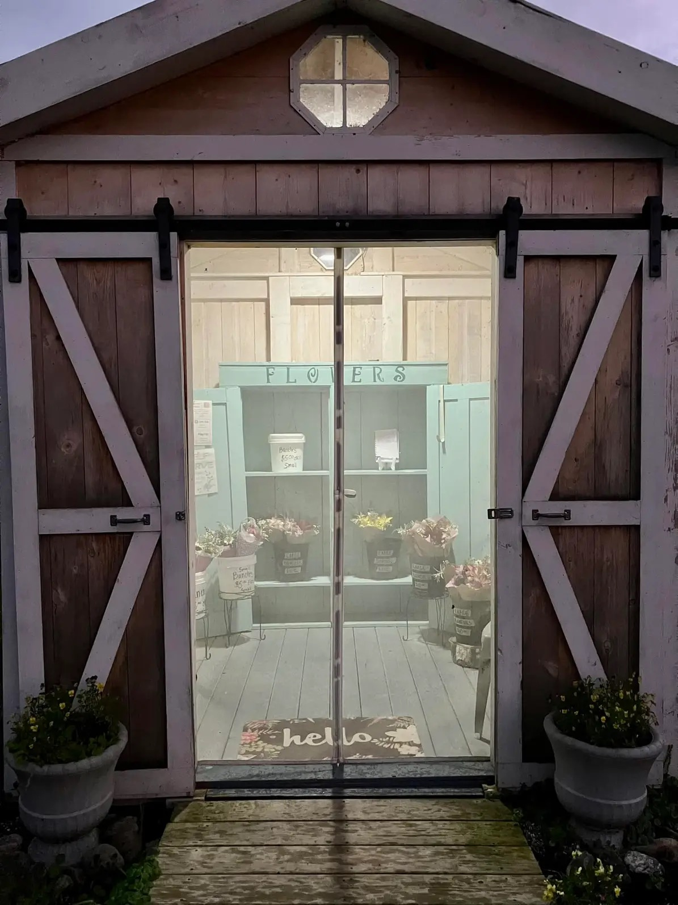

Our Story

Fleur Roots continues a little roadside flower stand started by Laura. Her garden, her love of flowers, and most of all her love for her family inspired what we're growing today.
We're keeping her garden blooming—one season and one bouquet at a time.
From her roots, we bloom. ♡